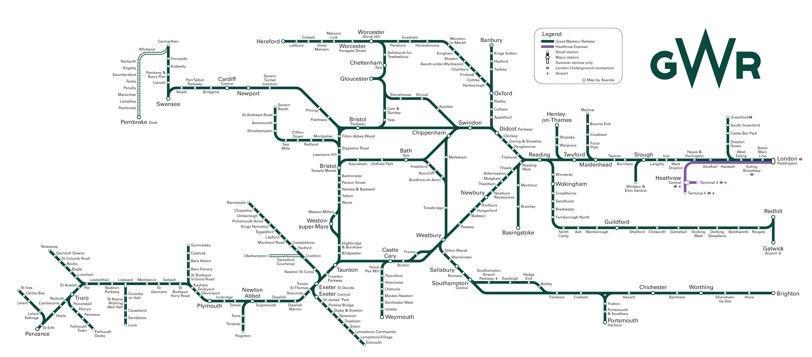

Design Project: Great Western Railway Network Map
Over the summer of 2016, my local rail franchise underwent a significant rebranding from First Great Western to Great Western Railway, the former railway company that built and operated the region’s railway pre-nationalisation. While the business did apply a lot of green paint to its rolling stock, it did not however put much time into redesigning its route map, which still to this date remains very similar to the old corporate identity of First Great Western.
I saw the newly released map, and set a project for myself to redesign it. Using Adobe Illustrator, I tried to make a smoother, more fluid map than the angular serif map currently available from the GWR website.